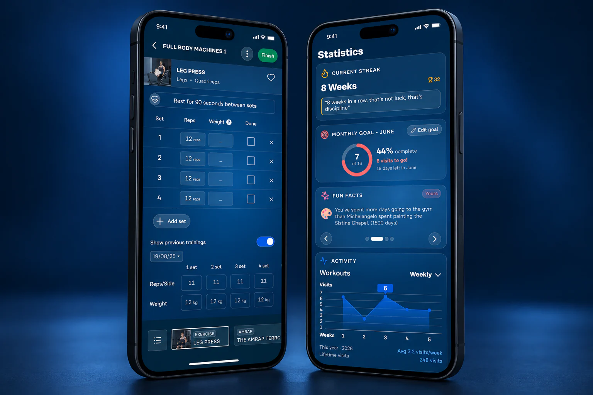

Guide the current exercise
Exercise context, sets, repetitions and rest guidance help make the immediate task easier to understand.
Fitness24Seven
Modernising a dated training system into a more instructive, linear experience, with particular attention to people who are just getting started.

An experienced gym-goer can fill in the gaps in a workout interface. A beginner needs more guidance: what to do, what to record and where to go next.
Exercise context, sets, repetitions and rest guidance help make the immediate task easier to understand.
A more linear training flow and an exercise navigator give the session structure, helping beginners move through it with less uncertainty.
Workout history and statistics complement the session with a view of activity over time. The intention was to support consistency and help people build a habit.
The redesign focused on guidance and continuity, bringing a more modern visual language to a practical training tool.